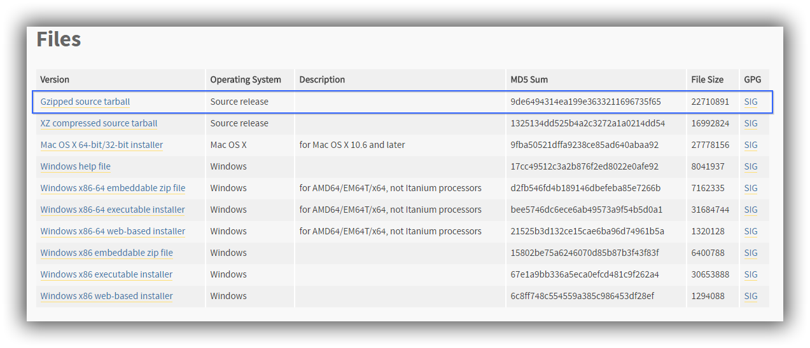

由于目前CentOS 7中还有一些包是依赖于python2的，如yum，因此在安装Python3时，尽量避免修改系统中Python2的相关设置。
安装编译环境和软件依赖关系
安装 Python3时，使用源码编译安装，安装前要确保相关的开发工具包组以及相应依赖关系已经安装，如果没有安装好依赖关系，可能会导致安装完成后出现一些问题，如交互环境下按键出现的问题，因为缺少readline依赖等。
1 | yum groupinstall Development Tools |
获取Python3源码
在 Python 官网下载源码（https://www.python.org/downloads/release/python-364/) 并解压缩

1 | wget https://www.python.org/ftp/python/3.6.4/Python-3.6.4.tgz |
编译安装 Python3
进入解压后的 python 源码目录，配置配置编译选项后进行编译安装
1 | mkdir /usr/local/python3 |
建立 Python3 和 pip3 的软链接
1 | ln -s /usr/local/python3/bin/python3 /usr/bin/python3 |
除了建立pip3的软连接外，本地系统内同时存在python2和3的版本的话，使用pip（或者其他类似的script文件夹中的脚本命令）命令，其所关联的python解释器版本可能并不是预期中的版本号。因此，可以直接先分别在两个pip所在的目录中使用命令，看看究竟是哪个pip不能使用。此外，可以直接指定python解释器的版本号，前提是你已经将python2,3进行了区分，使用如下类似命令进行安装python3 -m pip install packagename
在 Python2环境下安装 virtualenv
安装virtualenv之前需要安装pip(2)，pip的安装方法和升级方法在 https://pip.pypa.io/en/stable/installing/ 上有详细说明，安装pip后，使用pip安装virtualenv：
1 | pip install virtualenv |
创建或指定一个目录（或子目录）用于部署virtualenv的虚拟环境，这里虚拟环境使用python3
1 | mkdir Development/myproject |
激活虚拟环境：在virtualenv 目录中使用source venv/bin/activate
退出虚拟环境：deactivate